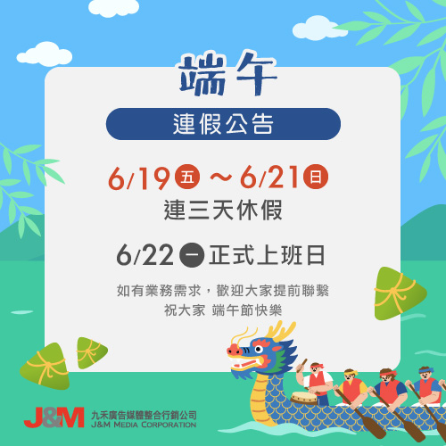

6/17 端午節連假公告

親愛的客戶與合作夥伴們您好： 九禾廣告媒體整合行銷公司將於 6月19日（五）至6月21日（日）
進行為期三天的端午連續假期，期間暫停營業與客服服務， 我們將於 6月22日（星期一）正常上班。 如有相關業務需求，歡迎提前與我們聯繫安排，
感謝您一直以來的支持與理解！ 在這個充滿傳統與溫度的節日裡， 九禾祝您端午安康，闔家平安！
#九禾廣告媒體 #端午連假公告 #端午節 #端午安康